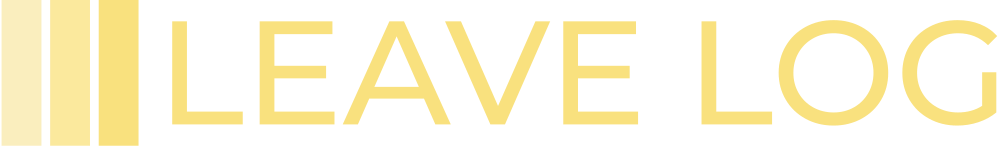

<mat-sidenav-container class="sidenav-container">
  <mat-sidenav
    #drawer
    class="sidenav"
    fixedInViewport
    [attr.role]="(isHandset$ | async) ? 'dialog' : 'navigation'"
    [mode]="(isHandset$ | async) ? 'over' : 'side'"
    [opened]="(isHandset$ | async) === false"
    *ngIf="isAdmin$ | async"
  >
    <div class="sidebar-container">
      <div class="brand-container">
        
        <button
          mat-icon-button
          color="primary"
          class="close-btn"
          *ngIf="isHandset$ | async"
          (click)="toggleSidebar()"
        >
          <mat-icon>close</mat-icon>
        </button>
      </div>

      <mat-nav-list class="sidebar">
        <button
          mat-flat-button
          class="nav-link"
          routerLinkActive="active-nav-link"
          routerLink="/users"
          (click)="setTitle('Users')"
        >
          <div>
            <mat-icon>group</mat-icon>
            Users
          </div>
        </button>
        <button
          mat-flat-button
          class="nav-link"
          routerLinkActive="active-nav-link"
          routerLink="/holidays"
          (click)="setTitle('Holidays')"
        >
          <div>
            <mat-icon>weekend</mat-icon>
            Holidays
          </div>
        </button>
        <button
          mat-flat-button
          class="nav-link"
          routerLinkActive="active-nav-link"
          routerLink="/leave-requests"
          (click)="setTitle('Leave Requests')"
        >
          <div>
            <mat-icon>free_cancellation</mat-icon>
            Leave Requests
          </div>
        </button>
        <button
          mat-flat-button
          class="nav-link"
          routerLinkActive="active-nav-link"
          routerLink="/leaves"
          (click)="setTitle('Leaves')"
        >
          <div>
            <mat-icon>surfing</mat-icon>
            Leaves
          </div>
        </button>
      </mat-nav-list>

      <div class="account-container">
        <div class="user">
          <button mat-mini-fab class="user-icon" color="primary">
            <mat-icon>person</mat-icon>
          </button>
          <div>
            <p class="mat-h2">{{ username | titlecase }}</p>
            <p class="mat-caption">{{ role | titlecase }}</p>
          </div>
        </div>
        <button
          class="logout"
          mat-raised-button
          color="primary"
          (click)="onLogout()"
        >
          <mat-icon>logout</mat-icon>
          Sign Out
        </button>
      </div>
    </div>
  </mat-sidenav>
  <div class="backdrop" *ngIf="isHandset$ | async"></div>

  <mat-sidenav-content>
    <mat-toolbar color="primary" class="header">
      <button
        type="button"
        aria-label="Toggle sidenav"
        mat-icon-button
        *ngIf="(isAdmin$ | async) && (isHandset$ | async)"
        (click)="toggleSidebar()"
      >
        <mat-icon aria-label="Side nav toggle icon">menu</mat-icon>
      </button>

      <h1 class="mat-headline-1">{{ title }}</h1>

      <p class="today-date">{{ date | date : "dd MMM, yyyy" }}</p>
      <button
        *ngIf="(isAdmin$ | async) === false"
        class="logout"
        mat-icon-button
        (click)="onLogout()"
      >
        <mat-icon>logout</mat-icon>
      </button>
    </mat-toolbar>

    <div class="outlet-container">
      <router-outlet></router-outlet>
    </div>
  </mat-sidenav-content>
</mat-sidenav-container>
